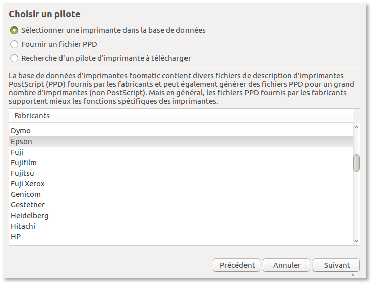

~ Laurux.Pos ~

~ Laurux.Pos ~ |
|
|
|
installation et paramétrage d'une imprimante 80 mm
sur Laurux.Pos.
Le tutoriel çi-dessous a été fait pour une Epson TMT-T88V mais devrait s'appliquer sur tous types d'imprimantes.
1- Installez le driver fourni avec l'imprimante. Si vous ne disposez pas de ce driver allez à l'adresse suivante :
https://download.epson-biz.com/modules/pos/index.php?page=single_soft&cid=5012&pcat=3&pid=3
Pour installer le driver, décompressez le fichier tmx-cups. Cela va créer un répertoire tmx-cups. Allez dans ce répertoire et lancez le fichier install.sh. Si le programme ne se lance pas, faites un clic droit, allez dans les permissions et vérifiez que le bouton "Autoriser l'exécution comme un programme" est bien coché.
Lorsque l'installation est terminée allez dans votre gestionnaire d'imprimante et cliquez sur "Ajouter" et attendre un court instant le temps que le système detecte l'imprimante
Cliquez sur suivant et choisir le pilote Epson

Cliquez sur suivant et choisir TM BA Termal
Cliquez sur suivant
Cliquez sur "Appliquer" et n'imprimez pas de page de
tests.
L'imprimante est maintenant visible dans le
gestionnaire d'imprimante. Sélectionnez-là et clic droit "définir par
défaut" puis clic droit "propriétés" puis "options de l'imprimante"
Remplissez les zones tel qu'elles sont définies
ci-dessus.
NB : "Print speed" sert a définir la vitesse
d'impression donc vous pouvez jouer avec ces valeurs afin qu'elles
correspondent à vos goûts.
Si vous n'avez pas de tiroir caisse alors dans la zone
"Cash Drawer" mettre "Don't open drawers".
Cliquez sur "OK" et faites une page de test.
----------------------------------------------------------------------------------------------------------------------